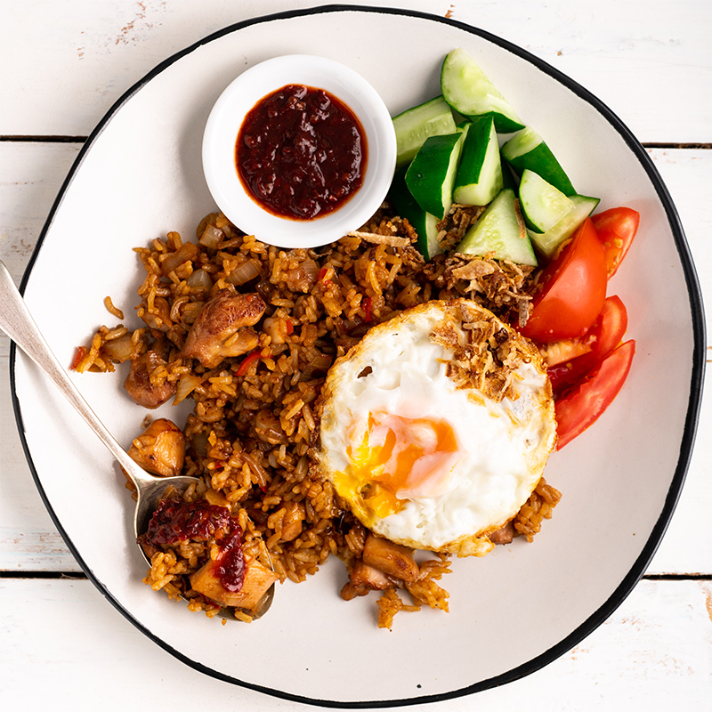

Anyone who has been to Bali would be familiar with Nasi Goreng and probably had it almost every day because it’s everywhere and darn delicious!
Nasi Goreng is the popular Indonesian fried rice which is traditionally served with a fried egg. I love the unique dark brown, caramelised colour of the rice! It’s a simple recipe, you won’t need to hunt down any unusual ingredients, and it’s one of my favourite Indonesian foods – and I’m betting you will love it too.